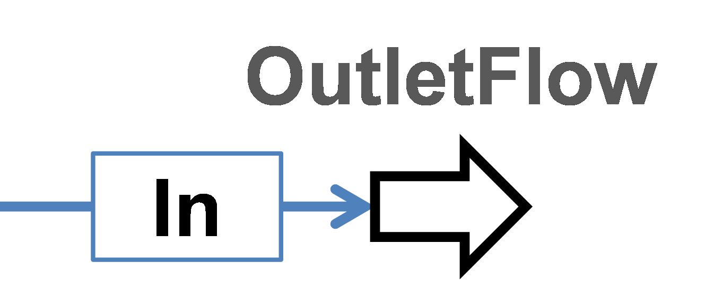
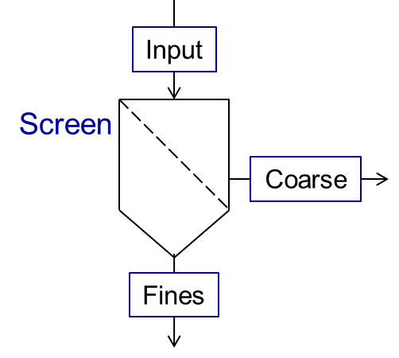
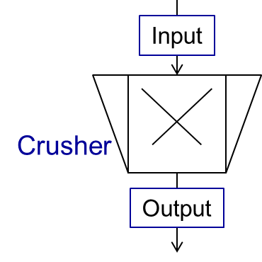
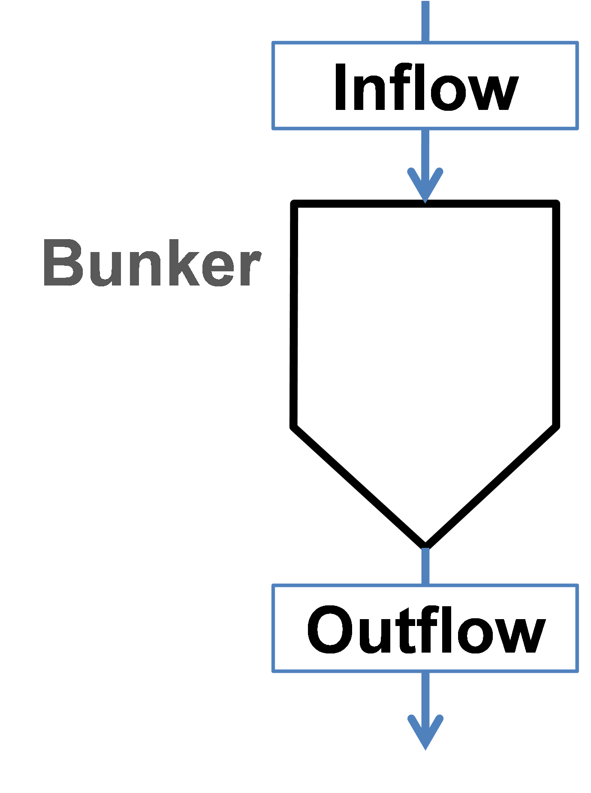
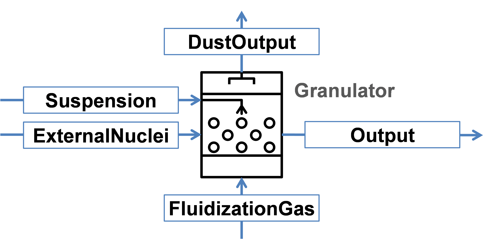

Units library¶
An operation unit performs one of the following tasks:
- Streams processing: examples are Inlet flow, Outlet flow, Mixer and Splitter.
- Steady-state simulation: example is Screen.
- Dynamic simulation: examples are Granulator, Agglomerator and Bunker.
A basic unit provides interfaces to the simulation system. It contains program interfaces to: material streams, equation solvers and material database. Moreover, you can develope your own units using the template for creating custom units and then add them to the units library.
For more information, please refer to the help document under Dyssol\Help\Units and Dyssol\Help\Units development.pdf.
Inlet flow¶
This unit allows defining the parameters of the input material, showing in the figure below.

Outlet flow¶
This unit serves to connect the output material flows, as shown in the figure below.
{kind=link}
Mixer¶
A mixer mixes two input material streams (\(In1\), \(In2\)) into the one output stream (\(Out\)), as shown in the scheme below.

The output stream will be defined for all time points for which the streams \(In1\) and \(In2\) are defined. Mixing of more streams can be implemented by connecting of several mixers sequentially.
The parameters of output stream are calculated as:
Note
Notations:
\(\dot{m}\) – mass flow
\(\dot{H}\) - enthalpy flow
\(h\) - specific enthalpy
\(T\) - temperature
\(P\) - pressure
All secondary attributes of output stream, such as phase fractions, compounds fractions and multidimensional distributions are calculated depending on mass fractions of input streams.
See also
a demostration file at <Example Flowsheets/Units/Mixer.dlfw>.
Splitter¶
A splitter divides input stream (\(In\)) into two output streams (\(Out1\) and \(Out2\)), as shown in the figure below.

Both output streams are defined for the same set of time points for which the input stream has been defined. The splitting of input stream into more than two fractions can be done by sequential connection of several splitter units.
You can specify the splitting factor \(K_{splitt}\), which is defined in following equations. Here \(\dot{m}\) is a mass flow.
Note
Notations:
\(\dot{m}\) - mass flow
\(K_{splitt}\) - Splitting factor
Note
Input parameters needed for the simulation:
| Name | Description | Units | Boundaries |
|---|---|---|---|
| Ksplitt | Splitting factor | [–] | 0 ≤ Ksplitt ≤ 1 |
See also
a demostration file at <Example Flowsheets/Units/Splitter.dlfw>.
Screen¶
Screen unit is designed for classification of input material into two fractions according to particle size distribution (PSD), as shown below.
{kind=link}
In Dyssol, 4 models are available to describe the screen grade efficiency:
- Plitt’s model
- Molerus & Hoffmann model
- Probability model
- Teipel / Hennig model
In the following figure, several grade efficiency curves for different parameters of separations sharpness are shown.
Note
This figure only applies to the Plitt’s model and Molerus & Hoffmann model.

Plitt’s model¶
This model is described using the following equation:
Note
Notations applied in the models:
\(G(x_i)\) – grade efficiency: mass fraction of material within the size class \(i\) in the feed (\(\dot{m}_{i,input}\)) that leaves the screen in the coarse stream (\(\dot{m}_{i,coarse}\))
\(x_{cut}\) – cut size of the classification model in meter
\(\alpha\) – sharpness of separation
\(x_i\) – size of a particle
Note
Input parameters needed for the simulation:
| Name | Symbol | Description | Units | Boundaries |
|---|---|---|---|---|
| Xcut | \(x_{cut}\) | Cut size of the classification model | [m] | Xcut > 0 |
| Alpha | \(\alpha\) | Sharpness of separation | [–] | 0 ≤ Alpha ≤ 100 |
See also
a demostration file at <Example Flowsheets/Units/Screen Plitt.dlfw>.
See also
Plitt, L.R.: The analysis of solid–solid separations in classifiers. CIM Bulletin 64 (708), p. 42–47, 1971
Molerus & Hoffmann model¶
This model is described using the following equation:
Note
Notations applied in the models:
\(G(x_i)\) – grade efficiency: mass fraction of material within the size class \(i\) in the feed that leaves the screen in the coarse stream
\(x_{cut}\) – cut size of the classification model
\(\alpha\) – sharpness of separation
\(x_i\) – size of a particle
Note
Input parameters needed for the simulation:
| Name | Symbol | Description | Units | Boundaries |
|---|---|---|---|---|
| Xcut | \(x_{cut}\) | Cut size of the classification model | [m] | Xcut > 0 |
| Alpha | \(\alpha\) | Sharpness of separation | [–] | 0 < Alpha ≤ 100 |
See also
a demostration file at <Example Flowsheets/Units/Screen Molerus-Hoffmann.dlfw>.
See also
Molerus, O.; Hoffmann, H.: Darstellung von Windsichtertrennkurven durch ein stochastisches Modell, Chemie Ingenieur Technik, 41 (5+6), 1969, pp. 340-344
Probability model¶
This model is described using the following equation:
Note
Notations applied in this model:
\(G(x_i)\) – grade efficiency: mass fraction of material within the size class \(i\) in the feed that leaves the screen in the coarse stream
\(x_i\) – size of a particle
\(\sigma\) – standard deviation of the normal output distribution
\(\mu\) – mean of the normal output distribution
\(N\) – number of classes of particle size distribution
Note
Input parameters needed for the simulation:
| Name | Symbol | Description | Units | Boundaries |
|---|---|---|---|---|
| Mean | \(\mu\) | Mean of the normal output distribution | [m] | Mean > 0 |
| Standard deviation | \(\sigma\) | Standard deviation of the normal output distribution | [m] | Standard deviation > 0 |
See also
a demostration file in install path <Example Flowsheets/Units/Screen Probability.dlfw>.
See also
Radichkov, R.; Müller, T.; Kienle, A.; Heinrich, S.; Peglow, M.; Mörl, L.: A numerical bifurcation analysis of continuous fluidized bed spray granulation with external product classification, Chemical Engineering and Processing 45, 2006, pp. 826–837
Teipel / Hennig model¶
This model is described using the following equation:
Note
Notations applied in the models:
\(G(x_i)\) – grade efficiency: mass fraction of material within the size class \(i\) in the feed that leaves the screen in the coarse stream
\(x_{cut}\) – cut size of the classification model
\(\alpha\) – sharpness of separation
\(\beta\) - sharpness of separation
\(a\) - separation offset
\(x_i\) – size of a particle
Note
Input parameters needed for the simulation:
| Name | Symbol | Description | Units | Boundaries |
|---|---|---|---|---|
| Xcut | \(x_{cut}\) | Cut size of the classification model | [m] | Xcut > 0 |
| Alpha | \(\alpha\) | Sharpness of separation 1 | [–] | 0 < Alpha ≤ 100 |
| Beta | \(\beta\) | Sharpness of separation 2 | [–] | 0 < Beta ≤ 100 |
| Offset | \(a\) | Separation offset | [–] | 0 ≤ Offset ≤ 1 |
See also
a demostration file in install path <Example Flowsheets/Units/Screen Teipel-Hennig.dlfw>.
See also
Hennig, M. and Teipel, U. (2016), Stationäre Siebklassierung. Chemie Ingenieur Technik, 88: 911–918
Crusher¶
A crusher comminutes the input material stream and reduces the average particle size. The schema is illustrated below.
{kind=link}
This unit can be described using 3 models in Dyssol:
- Bond’s model
- Cone model
- Const model
Bond’s model¶
This model is used to perform milling of the input stream. The crushing is performed according to the model proposed by Bond. The simplification is made, and the particle size distribution of the output stream is described by the normal function.
Note
Notations applied in this model:
\(x_{80,out}\) – characteristic particle size of the output stream
\(x_{80,in}\) – characteristic particle size of the input stream
\(w_i\) – Bond Work Index, dependent on the material
\(P\) – power input
\(\dot{m}\) – mass flow of solids in the input stream
\(q_3(x)\) – output mass related density distribution
\(\sigma\) – standard deviation of the output normal distribution
\(\mu\) – mean value of the output normal distribution
Note
Solid phase and particle size distribution are required for the simulation.
Note
Input parameters needed for the simulation:
| Name | Symbol | Description | Units | Boundaries |
|---|---|---|---|---|
| P | \(P\) | Power input | [kW] | P > 0 |
| Wi | \(w_i\) | Bond work index | [kWh/t] | 1 ≤ Wi ≤ 100 |
| Standard deviation | \(\sigma\) | Standard deviation of the output distribution | [m] | Standard deviation > 0 |
See also
a demostration file in install path <Example Flowsheets/Units/Crusher Bond.dlfw>.
See also
F.C. Bond, Crushing and grinding calculation – Part I, British Chemical Engineering 6 (6) (1961) 378-385.
F.C. Bond, Crushing and grinding calculation – Part II, British Chemical Engineering 6 (8), (1961) 543-548.
Denver Sala Basic: Selection Guide for Process Equipment, 1993.
Average Bond Work Indices for various materials¶
| Material | Work Bond Index [kWh/t] | Material | Work Bond Index [kWh/t] |
|---|---|---|---|
| Andesite | 20.08 | Iron ore, oolitic | 12.46 |
| Barite | 5.2 | Iron ore, taconite | 16.07 |
| Basalt | 18.18 | Lead ore | 13.09 |
| Bauxite | 9.66 | Lead-zinc ore | 12.02 |
| Cement clinker | 14.8 | Limestone | 14 |
| Clay | 6.93 | Manganese ore | 13.42 |
| Coal | 14.3 | Magnesite | 12.24 |
| Coke | 16.84 | Molybdenum | 14.08 |
| Copper ore | 13.99 | Nickel ore | 15.02 |
| Diorite | 22.99 | Oil shale | 17.43 |
| Dolomite | 12.4 | Phosphate rock | 10.91 |
| Emery | 62.45 | Potash ore | 8.86 |
| Feldspar | 11.88 | Pyrite ore | 9.83 |
| Ferro-chrome | 8.4 | Pyrrhotite ore | 10.53 |
| Ferro-manganese | 9.13 | Quartzite | 10.54 |
| Ferro-silicon | 11 | Quartz | 14.93 |
| Flint | 28.78 | Rutile ore | 13.95 |
| Fluorspar | 9.8 | Shale | 17.46 |
| Gabbro | 20.3 | Silica sand | 15.51 |
| Glass | 13.54 | Silicon carbide | 27.46 |
| Gneiss | 22.14 | Slag | 11.26 |
| Gold ore | 16.42 | Slate | 15.73 |
| Granite | 16.64 | Sodium silicate | 14.74 |
| Graphite | 47.92 | Spodumene ore | 11.41 |
| Gravel | 17.67 | Syenite | 14.44 |
| Gypsum rock | 7.4 | Tin ore | 11.99 |
| Iron ore ,hematite | 14.12 | Titanium ore | 13.56 |
| Iron ore, hematite-specular | 15.22 | Trap rock | 21.25 |
| Iron ore, magnetite | 10.97 | Zinc ore | 12.72 |
Cone model¶
The model is described below as
Note
Notations:
\(w_{out,i}\) – mass fraction of particles with size \(i\) in output distribution
\(w_{in,i}\) – mass fraction of particles with size \(i\) in inlet distribution
\(S_k\) – mass fraction of particles with size \(k\), which will be crushed
\(B_{ki}\) – mass fraction of particles with size \(i\), which get size after breakage less or equal to \(k\)
\(S_k\) is described by the King selection function.
Note
Notations:
\(x_k\) – mean particle diameter in size-class \(k\)
\(CSS\) – close size setting of a cone crusher
\(\alpha_1, \alpha_2, n\) – parameters of the King selection function
\(B_{ki}\) is calculated by the Vogel breakage function.
Note
Notations:
\(x'\) – minimum fragment size which can be achieved by crushing
\(q\) – parameter of the Vogel breakage function
Note
Solid phase and particle size distribution are required for the simulation.
Note
Input parameters needed for the simulation:
| Name | Symbol | Description | Units | Boundaries |
|---|---|---|---|---|
| CSS | \(CSS\) | Close size setting of a cone crusher. Parameter of the King selection function | [m] | CSS > 0 |
| alpha1 | \(\alpha_1\) | Parameter of the King selection function | [–] | 0.5 ≤ alpha1 ≤ 0.95 |
| alpha2 | \(\alpha_2\) | Parameter of the King selection function | [–] | 1.7 ≤ alpha2 ≤ 3.5 |
| n | \(n\) | Parameter of the King selection function | [–] | 1 ≤ n ≤ 3 |
| d’ | \(x'\) | Minimum fragment size achieved by crushing. Parameter of the Vogel breakage function | [m] | d’ > 0 |
| q | \(q\) | Parameter of the Vogel breakage function | [–] |
See also
a demostration file in install path <Example Flowsheets/Units/Crusher Cone.dlfw>.
See also
King, R. P., Modeling and simulation of mineral processing systems, Butterworth & Heinemann, Oxford, 2001.
Vogel, L., Peukert, W., Modelling of Grinding in an Air Classifier Mill Based on A Fundamental Material Function, KONA, 21, 2003, 109-120.
Const output model¶
This model sets a normal distribution with the specified constant parameters to the output stream. Outlet distribution does not depend on the inlet distribution.
Note
Notations:
\(q_3(x)\) – output mass related density distribution
\(\sigma\) – standard deviation of the output normal distribution
\(\mu\) – mean value of the output normal distribution
Note
Solid phase and particle size distribution are required for the simulation.
Note
Input parameters needed for the simulation:
| Name | Symbol | Description | Units | Boundaries |
|---|---|---|---|---|
| Mean | \(\mu\) | Mean of the normal output distribution | [m] | Mean > 0 |
| Standard deviation | \(\sigma\) | Standard deviation of the normal output distribution | [m] | Standard deviation > 0 |
See also
a demostration file in install path <Example Flowsheets/Units/Crusher Const.dlfw>.
Bunker¶
Bunker unit performs accumulation of the solid part of the input material with ideal mixing, see figure below. The bunker mass is controlled to match the user-defined target mass.
{kind=link}
Note
Solid phase is required for the simulation.
Note
Input parameters needed for the simulation:
| Name | Description | Units | Boundaries |
|---|---|---|---|
| Target mass | Target mass within the bunker | [kg] | Target mass > 0 |
See also
a demostration file in install path <Example Flowsheets/Units/Bunker.dlfw>.
Granulator¶
This unit represents a simplified model of a fluidized bed granulation reactor, see figure below.
{kind=link}
The model does not take into account attrition of particles inside the apparatus and does not keep properly any secondary distributed properties except size.
Note
Notations:
\(q_3\) – mass density distribution of particles inside apparatus
\(q_3^{in}\) – mass density distribution of external particles from ExternalNuclei stream
\(\Delta d\) – class size
\(d_p\) – particle diameter in a class
\(\dot{m}_{in}\) – mass flow of input nuclei
\(\dot{m}_{out}\) – output mass flow of the product
\(\dot{m}_{dust}\) – output mass flow from the DustOutput
\(\dot{m}_{susp}\) – total mass flow of the suspension
\(\dot{m}_{s,susp}\) – mass flow of the solid phase in the Suspension inlet
\(\dot{m}_{fl,g}\) – mass flow of the gas phase in the FluidizationGas inlet
\(\dot{m}_{e}\) – effective mass stream of the injected suspension
\(M_{tot}\) – holdup mass
\(\rho_{s,susp}\) – density of solids in the holdup
\(G_{e}\) – effective growth rate
\(A_{tot}\) – total surface of particles in the granulator
\(K_{os}\) – overspray part in the suspension
Note
particle size distribution is required for the simulation. This unit is applied for solid, liquid and gas phases.
Note
Input parameters needed for the simulation:
| Name | Symbol | Description | Units | Boundaries |
|---|---|---|---|---|
| Kos | \(K_{os}\) | Overspray part in the suspension | [–] | 0 ≤ Kos ≤ 1 |
| RTol | – | Relative tolerance for equation solver | [–] | 0 < RTol ≤ 1 |
| ATol | – | Absolute tolerance for equation solver | [–] | 0 < ATol ≤ 1 |
Note
State variables:
| Name | Symbol | Description | Units |
|---|---|---|---|
| Atot | \(A_{tot}\) | Total surface of particles in the granulator | [m2] |
| Mtot | \(M_{tot}\) | Total mass of all particles in the granulator | [kg] |
| Mout | \(\dot{m}_{out}\) | Output mass flow of the product | [kg/s] |
| Mdust | \(\dot{m}_{dust}\) | Output mass flow of dust | [kg/s] |
| G | \(G_{e}\) | Effective growth rate | [m/s] |
| PSDi | \(q_{3,i}\) | Mass density distribution of particles | [1/m] |
See also
a demostration file in install path <Example Flowsheets/Units/Granulator.dlfw>.
See also
S.Heinrich, M. Peglow, M. Ihlow, M. Henneberg, L. Mörl, Analysis of the start-up process in continuous fluidized bed spray granulation by population balance modelling, Chem. Eng. Sci. 57 (2002) 4369-4390.
Agglomerator¶
This unit represents a simplified model of agglomeration process, see figure below.

The model does not take into account attrition of particles inside the apparatus and does not keep properly any secondary distributed property except size.
Mass related density distribution of output stream is calculated according to following equations:
Note
Notations:
\(v,u\) – volumes of agglomerating particles
\(n(v,t)\) – number density function
\(\dot{n}_{in}(t)\), \(\dot{n}_{out}(t)\) – number density functions of inlet and outlet streams, correspondingly
\(B_{agg}(n,v,t)\), \(D_{agg}(n,v,t)\) – birth and death rates of particles with volume \(v\) caused due to agglomeration
\(\beta_0\) – agglomeration rate constant, dependent on operating conditions but independent from particle sizes
\(\beta(v,u)\) – the agglomeration kernel, see section Kernels.
\(t\) – time
\(\dot{m}_{in}\) – mass flow in the input stream
\(\dot{m}_{out}\) – mass flow in the output stream
Note
solid phase and particle size distribution are required for the simulation.
The method of calculating \(B_{agg}(n,v,t)\) and \(D_{agg}(n,v,t)\) is determined by the selected solver via unit parameter Solvers.
Note
Input parameters needed for the simulation:
| Name | Symbol | Description | Units | Boundaries |
|---|---|---|---|---|
| Beta0 | \(\beta_0\) | Size independent agglomeration rate constant | [–] | 0 < Beta0 ≤ \(10^{20}\) |
| Step | – | Maximum time step of internal DAE solver. Default value is 0. | [–] | 0 ≤ Step ≤ \(10^{9}\) |
| Solver | – | Solver used to calculate birth and death rates | [–] | – |
| Kernel | – | Agglomeration kernel type, must be an integer | [–] | 0 ≤ Kernel ≤ 9 |
| Rank | – | Rank of the kernel (applied for FFT solver only), must be an integer | [–] | 1 ≤ Rank ≤ 10 |
See also
a demostration file in install path <Example Flowsheets/Units/Agglomerator.dlfw>.
See also
V.Skorych, M. Dosta, E.-U. Hartge, S. Heinrich, R. Ahrens, S. Le Borne, Investigation of an FFT-based solver applied to dynamic flowsheet simulation of agglomeration processes, Advanced Powder Technology 30 (3) (2019), 555-564.
Kernels¶
The agglomeration kernels are applied to describe the agglomeration frequency between particles of volumes \(v\) and \(u\), which produce a new particle with the size \((v + u)\). In Dyssol environment, 10 types of kernels are numbered with integers from 0 to 9, as listed below.
Number Name Kernel equation 0 Constant \(\beta (u,v)=1\) 1 Sum \(\beta (u,v)=u+v\) 2 Product \(\beta (u,v)=uv\) 3 Brownian \(\beta (u,v)=\left(u^{\frac{1}{3}}+v^{\frac{1}{3}} \right)\,\left(u^{-\frac{1}{3}}+v^{-\frac{1}{3}} \right)\) 4 Shear \(\beta (u,v)=\left(u^{\frac{1}{3}}+v^{\frac{1}{3}} \right)^{\frac{7}{3}}\) 5 Peglow \(\beta (u,v)=\dfrac{ (u+v)^{0.71} }{(uv)^{0.062} }\) 6 Coagulation \(\beta(u,v)=u^{\frac{2}{3}}+v^{\frac{2}{3}}\) 7 Gravitational \(\beta(u,v)=\left(u^{\frac{1}{3}}+v^{\frac{1}{3}} \right)^2 \left|u^{\frac{1}{6}}-v^{\frac{1}{6}} \right|\) 8 Kinetic energy \(\beta(u,v)=\left(u^{\frac{1}{3}}+v^{\frac{1}{3}} \right)^2 \, \sqrt{\frac{1}{u}+\frac{1}{v}}\) 9 Thompson \(\beta(u,v)=\dfrac{(u-v)^2}{u+v}\)
Solvers¶
Solvers are applied to calculate the birth and death rate of agglomerates according to different mathematical models. In Dyssol, 3 solver types are available:
- Cell average
- Fast Fourier transformation (FFT)
- Fixed pivot
The applied equations in all solvers are listed as follows. For notation in the equations, please refer to the Notations above.
Cell average solver¶
This solver calculates the birth rate \(B_{agg}(n,v,t)\) and death rate \(D_{agg}(n,v,t)\) using a cell average technique.
Note
solid phase and particle size distribution are required for the simulation. Equidistant volume grid for particle size distribution must be used.
See also
J.Kumar, M. Peglow, G. Warnecke, S. Heinrich, An efficient numerical technique for solving population balance equation involving aggregation, breakage, growth and nucleation, Powder Technology 182 (1) (2008), 81-104.
FFT solver¶
This solver calculates the birth rate \(B_{agg}(n,v,t)\) and death rate \(D_{agg}(n,v,t)\) based on a separable approximation of the agglomeration kernel and a subsequent fast Fourier transformation.
The agglomeration kernel \(\beta (v,u)\) is represented in a separable form with the separation rank \(M\) as:
Then birth and death rate terms are transformed to following equations with \(\psi_i = a_i\,n\) and \(\varphi_i = b_i\,n\).
The separation turns the birth rate agglomeration integral into a convolution form \(\varphi_i * \psi_i\), which after piecewise constant discretization, is computed based on the convolution theorem
applying the direct and inverse fast Fourier transformation (\(FFT/IFFT\)) and the elementwise product \(\odot\).
Note
List of kernels separation equations
| Kernel | Separation equation |
|---|---|
| Constant | \(\beta(u,v) = \sum\limits_{i=1}^1 a_i(v)\,b_i(u),\) \(a_1 (v) = 1, b_1 (u) = 1\) |
| Sum | \(\beta(u,v) = \sum\limits_{i=1}^2 a_i(v)\,b_i(u),\) \(a_1 (v) = v, a_2 (v)= 1, b_1 (u) = 1, b_2 (u)= u\) |
| Brownian | \(\beta(u,v) = \sum\limits_{i=1}^3 a_i(v)\,b_i(u),\) \(a_1 (v) = \sqrt{2}, a_2 (v) = v^{\frac{1}{3}}, a_3 (v)= v^{-\frac{1}{3}}\) \(b_1 (u) = \sqrt{2}, b_2 (u) = u^{-\frac{1}{3}}, b_3 (u)= u^{\frac{1}{3}}\) |
| Product, Shear, Peglow, Coagulation, Gravitational, Kinetic energy, Thompson | Approximated by a rank-M separable function \(\beta (v,u) \approx \sum\limits_{i=1}^{M} a_i(v)\,b_i(u)\) using adaptive cross approximation |
Note
solid phase and particle size distribution are required for the simulation. Equidistant volume grid for particle size distribution must be used. Grid for particle size distribution must start from 0.
See also
V.Skorych, M. Dosta, E.-U. Hartge, S. Heinrich, R. Ahrens, S. Le Borne, Investigation of an FFT-based solver applied to dynamic flowsheet simulation of agglomeration processes, Advanced Powder Technology 30 (3) (2019), 555-564.
S.Le Borne, L. Shahmuradyan, K. Sundmacher, Fast evaluation of univariate aggregation integrals on equidistant grids. Computers and Chemical Engineering 74 (2015), 115-127.
Fixed pivot solver¶
This solver calculates the birth rate \(B_{agg}(n,v,t)\) and death rate \(D_{agg}(n,v,t)\) using a fixed pivot technique.
Note
solid phase and particle size distribution are required for the simulation.
See also
S.Kumar, D. Ramkrishna, On the solution of population balance equations by discretization – I. A fixed pivot technique. Chem. Eng. Sci. 51 (8) (1996), 1311-1332.
Time delay¶
This unit copies the complete information of the input stream \(In\) at any given timepoint \(t\) to the output stream \(Out\) at the timepoint \(t + \Delta t\), delaying the signal by a constant delay factor \(\Delta t\), which you will be asked to define for the simulation.
The scheme is shown in the figure below.

Note
Input parameters needed for the simulation:
| Name | Symbol | Description | Units | Boundaries |
|---|---|---|---|---|
| Time delay | \(\Delta t\) | Unit time delay | [s] | 0 ≤ Time delay ≤ \(10^6\) |
See also
a demostration file in install path <Example Flowsheets/Units/Time Delay.dlfw>.